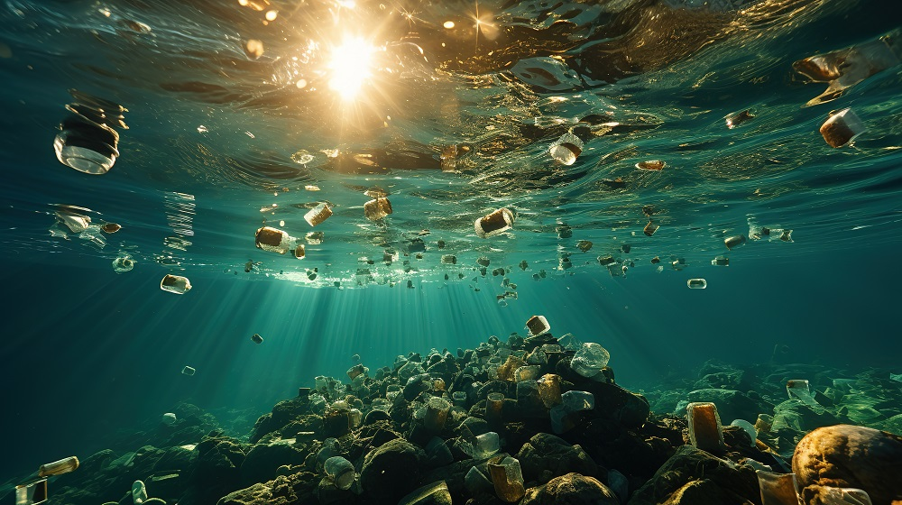

How Marine Pollution Affects Marine Life
Marine pollution has devastating effects on marine life. Plastics, chemicals, and other pollutants enter the ocean, causing harm to fish, birds, and marine mammals. For example, sea turtles often mistake plastic bags for jellyfish, leading to ingestion and often fatal consequences. Furthermore, toxic substances accumulate in the food chain, affecting all marine creatures, including those consumed by humans.
Additionally, coral reefs, which are vital to marine ecosystems, suffer from pollution. Chemicals from agricultural runoff and oil spills cause coral bleaching, weakening these essential habitats. The disruption of marine life not only affects biodiversity but also impacts human communities that rely on the ocean for food and economic activities.